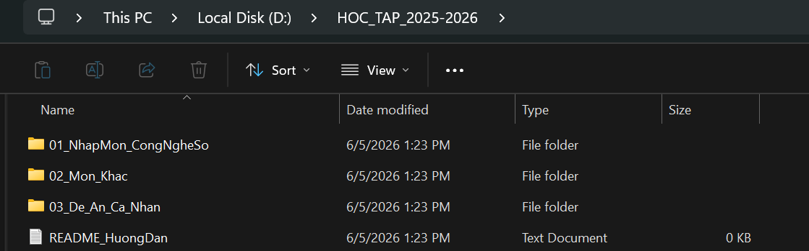
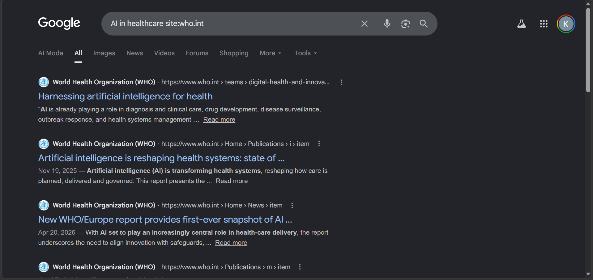
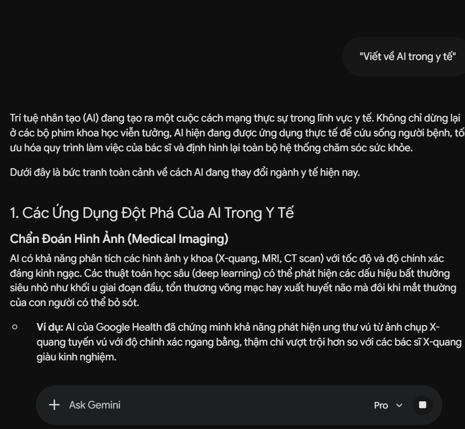
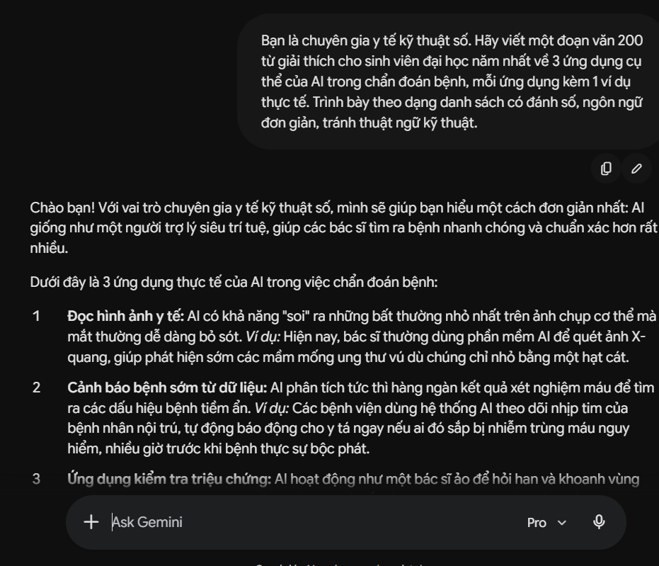
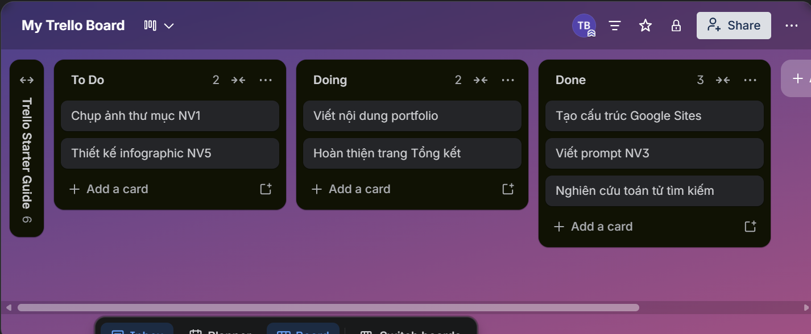

<style>
  @import url('https://fonts.googleapis.com/css2?family=Be+Vietnam+Pro:wght@300;400;500;600&family=Playfair+Display:wght@600&display=swap');

  *{box-sizing:border-box;margin:0;padding:0}
  :root{
    --nav-w:220px;
    --accent:#1D9E75;
    --accent-light:#E1F5EE;
    --accent-dark:#085041;
    --text:#1a1a1a;
    --muted:#6b7280;
    --border:#e5e7eb;
    --bg:#fafaf9;
    --card:#ffffff;
  }

  body{font-family:'Be Vietnam Pro',sans-serif;background:var(--bg);color:var(--text);display:flex;min-height:100vh;font-size:15px;line-height:1.7}

  nav{
    position:fixed;top:0;left:0;width:var(--nav-w);height:100vh;
    background:#fff;border-right:1px solid var(--border);
    display:flex;flex-direction:column;padding:1.5rem 0;z-index:100;overflow-y:auto
  }
  .logo{padding:0 1.25rem 1.5rem;border-bottom:1px solid var(--border);margin-bottom:1rem}
  .logo-name{font-family:'Playfair Display',serif;font-size:16px;color:var(--text);display:block}
  .logo-sub{font-size:11px;color:var(--muted);margin-top:2px;display:block}
  .nav-item{
    display:flex;align-items:center;gap:10px;padding:.55rem 1.25rem;
    font-size:13px;color:var(--muted);cursor:pointer;transition:all .15s;
    border-left:2px solid transparent;text-decoration:none
  }
  .nav-item:hover{color:var(--text);background:#f9fafb}
  .nav-item.active{color:var(--accent-dark);background:var(--accent-light);border-left-color:var(--accent);font-weight:500}
  .nav-item i{font-size:15px;width:16px;text-align:center}
  .nav-section{font-size:10px;text-transform:uppercase;letter-spacing:.08em;color:var(--muted);padding:.5rem 1.25rem .25rem;margin-top:.5rem;font-weight:500}

  main{margin-left:var(--nav-w);flex:1;padding:2.5rem;max-width:860px}

  section{display:none;animation:fadeIn .2s ease}
  section.active{display:block}
  @keyframes fadeIn{from{opacity:0;transform:translateY(6px)}to{opacity:1;transform:translateY(0)}}

  .page-title{font-family:'Playfair Display',serif;font-size:28px;color:var(--text);margin-bottom:.25rem}
  .page-sub{font-size:14px;color:var(--muted);margin-bottom:2rem;padding-bottom:1.25rem;border-bottom:1px solid var(--border)}

  .card{background:var(--card);border:1px solid var(--border);border-radius:12px;padding:1.25rem 1.5rem;margin-bottom:1rem}
  .card-title{font-size:13px;font-weight:500;color:var(--muted);text-transform:uppercase;letter-spacing:.06em;margin-bottom:.5rem}
  .card p{font-size:14px;line-height:1.8;color:#374151}

  .grid2{display:grid;grid-template-columns:1fr 1fr;gap:1rem;margin-bottom:1rem}
  .grid3{display:grid;grid-template-columns:1fr 1fr 1fr;gap:1rem;margin-bottom:1rem}

  .tag{display:inline-block;font-size:11px;padding:3px 10px;border-radius:20px;font-weight:500;margin:2px}
  .tag-green{background:var(--accent-light);color:var(--accent-dark)}
  .tag-gray{background:#f3f4f6;color:#374151}

  .screenshot-mock{
    background:linear-gradient(135deg,#f0fdf4 0%,#e1f5ee 100%);
    border:1px dashed #9FE1CB;border-radius:8px;
    padding:1.5rem;text-align:center;font-size:13px;color:var(--accent-dark);
    margin:1rem 0;position:relative
  }
  .screenshot-mock i{font-size:28px;color:var(--accent);display:block;margin-bottom:.5rem}

  table.rubric{width:100%;font-size:13px;border-collapse:collapse}
  table.rubric th{background:#f9fafb;padding:.5rem .75rem;text-align:left;font-weight:500;border-bottom:1px solid var(--border);color:var(--muted)}
  table.rubric td{padding:.5rem .75rem;border-bottom:1px solid #f3f4f6;vertical-align:top}
  table.rubric tr:last-child td{border-bottom:none}

  .prompt-box{border-radius:8px;padding:1rem 1.25rem;font-size:13px;margin:.5rem 0;line-height:1.7}
  .prompt-v1{background:#fef3c7;border-left:3px solid #f59e0b}
  .prompt-v2{background:#d1fae5;border-left:3px solid var(--accent)}
  .prompt-label{font-size:11px;font-weight:500;text-transform:uppercase;letter-spacing:.06em;margin-bottom:.4rem}
  .prompt-v1 .prompt-label{color:#92400e}
  .prompt-v2 .prompt-label{color:var(--accent-dark)}

  .principle-item{display:flex;gap:1rem;padding:.75rem 0;border-bottom:1px solid #f3f4f6;align-items:flex-start}
  .principle-item:last-child{border-bottom:none}
  .principle-num{width:28px;height:28px;border-radius:50%;background:var(--accent-light);color:var(--accent-dark);font-size:12px;font-weight:600;display:flex;align-items:center;justify-content:center;flex-shrink:0;margin-top:2px}
  .principle-title{font-weight:500;font-size:14px;color:var(--text)}
  .principle-desc{font-size:13px;color:#6b7280;margin-top:2px}

  .infographic{padding:1.5rem;background:#fff;border-radius:12px;border:1px solid var(--border)}
  .inf-item{display:flex;gap:1rem;padding:.85rem 0;border-bottom:1px solid #f3f4f6;align-items:flex-start}
  .inf-item:last-child{border-bottom:none}
  .inf-icon{width:40px;height:40px;border-radius:10px;background:var(--accent-light);color:var(--accent);font-size:20px;display:flex;align-items:center;justify-content:center;flex-shrink:0}
  .inf-title{font-weight:500;font-size:14px}
  .inf-desc{font-size:13px;color:#6b7280;margin-top:2px}
  .inf-tool{font-size:11px;background:#f3f4f6;color:#374151;padding:2px 8px;border-radius:20px;display:inline-block;margin-top:4px}

  .folder-tree{font-family:'Be Vietnam Pro',monospace;font-size:13px;background:#f9fafb;border:1px solid var(--border);border-radius:8px;padding:1rem 1.25rem;line-height:2}
  .folder-tree .folder{color:var(--accent-dark);font-weight:500}
  .folder-tree .file-item{color:#374151}
  .folder-tree .indent1{padding-left:20px}
  .folder-tree .indent2{padding-left:40px}

  .search-example{background:#f9fafb;border:1px solid var(--border);border-radius:8px;padding:.85rem 1rem;margin:.5rem 0;font-size:13px}
  .search-op{font-weight:500;color:var(--accent-dark);font-size:12px;text-transform:uppercase;letter-spacing:.05em}
  .search-query{font-family:monospace;background:#fff;border:1px solid var(--border);border-radius:4px;padding:2px 8px;font-size:12px;color:#1a1a1a;display:inline-block;margin:.3rem 0}
  .search-result{font-size:12px;color:#6b7280}

  .trello-board{display:grid;grid-template-columns:1fr 1fr 1fr;gap:.75rem;margin:1rem 0}
  .trello-col{background:#f3f4f6;border-radius:8px;padding:.75rem}
  .trello-col-title{font-size:11px;font-weight:600;text-transform:uppercase;letter-spacing:.06em;color:var(--muted);margin-bottom:.5rem}
  .trello-card{background:#fff;border:1px solid var(--border);border-radius:6px;padding:.5rem .75rem;margin:.35rem 0;font-size:12px;cursor:default}
  .trello-card .due{font-size:10px;color:var(--muted);margin-top:2px}

  .timeline{position:relative;padding-left:2rem}
  .timeline::before{content:'';position:absolute;left:7px;top:4px;bottom:4px;width:1px;background:var(--border)}
  .tl-item{position:relative;margin-bottom:1rem}
  .tl-dot{position:absolute;left:-1.85rem;top:5px;width:9px;height:9px;border-radius:50%;background:var(--accent);border:2px solid #fff;box-shadow:0 0 0 1px var(--accent)}
  .tl-title{font-weight:500;font-size:14px}
  .tl-desc{font-size:13px;color:#6b7280;margin-top:2px}

  .skill-badge{display:inline-flex;align-items:center;gap:6px;background:#f3f4f6;border-radius:6px;padding:.35rem .75rem;font-size:13px;margin:.2rem}

  .hero-card{background:var(--accent-light);border-radius:16px;padding:2rem;margin-bottom:1.5rem;display:flex;gap:1.5rem;align-items:center}
  .avatar{width:72px;height:72px;border-radius:50%;background:var(--accent);color:#fff;font-family:'Playfair Display',serif;font-size:26px;display:flex;align-items:center;justify-content:center;flex-shrink:0}
  .hero-info h2{font-family:'Playfair Display',serif;font-size:22px;color:var(--accent-dark)}
  .hero-info p{font-size:13px;color:#374151;margin-top:.25rem}

  .stat-row{display:grid;grid-template-columns:repeat(3,1fr);gap:.75rem;margin-bottom:1.5rem}
  .stat-box{background:#fff;border:1px solid var(--border);border-radius:10px;padding:1rem;text-align:center}
  .stat-box .num{font-size:24px;font-weight:600;color:var(--accent)}
  .stat-box .lbl{font-size:11px;color:var(--muted);margin-top:2px}
</style>

<nav id="sidebar">
  <div class="logo">
    <span class="logo-name">Digital Portfolio</span>
    <span class="logo-sub">Nhập môn Công nghệ số & AI</span>
  </div>

  <a class="nav-item active" onclick="show('home')" href="#">
    <i class="ti ti-home" aria-hidden="true"></i> Giới thiệu
  </a>

  <div class="nav-section">Nhiệm vụ</div>
  <a class="nav-item" onclick="show('nv1')" href="#"><i class="ti ti-folder" aria-hidden="true"></i> NV1 – Quản lý tệp</a>
  <a class="nav-item" onclick="show('nv2')" href="#"><i class="ti ti-search" aria-hidden="true"></i> NV2 – Tìm kiếm</a>
  <a class="nav-item" onclick="show('nv3')" href="#"><i class="ti ti-message-2" aria-hidden="true"></i> NV3 – Viết Prompt</a>
  <a class="nav-item" onclick="show('nv4')" href="#"><i class="ti ti-users" aria-hidden="true"></i> NV4 – Hợp tác</a>
  <a class="nav-item" onclick="show('nv5')" href="#"><i class="ti ti-sparkles" aria-hidden="true"></i> NV5 – Sáng tạo AI</a>
  <a class="nav-item" onclick="show('nv6')" href="#"><i class="ti ti-shield-check" aria-hidden="true"></i> NV6 – AI có trách nhiệm</a>

  <div class="nav-section">Tổng kết</div>
  <a class="nav-item" onclick="show('summary')" href="#"><i class="ti ti-award" aria-hidden="true"></i> Tổng kết & Reflection</a>
</nav>

<main>

<!-- HOME -->
<section id="home" class="active">
  <div class="hero-card">
  <div class="avatar" style="overflow: hidden; padding: 0;">
    
  </div>
  <div class="hero-info">
      <h2>Trần Đoàn Quang Huy</h2>
      <p>MSSV: 23100083 &nbsp;·&nbsp; Trường Đại học Y Dược</p>
      <p style="margin-top:.5rem">Môn học: Nhập môn Công nghệ số và Ứng dụng Trí tuệ Nhân tạo</p>
    </div>
  </div>

  <div class="stat-row">
    <div class="stat-box"><div class="num">8</div><div class="lbl">Trang nội dung</div></div>
    <div class="stat-box"><div class="num">6</div><div class="lbl">Nhiệm vụ hoàn thành</div></div>
    <div class="stat-box"><div class="num">15</div><div class="lbl">Tuần học tập</div></div>
  </div>

  <div class="card">
    <div class="card-title">Giới thiệu bản thân</div>
    <p>Xin chào! Tôi là sinh viên tại Trường Đại học Y Dược. Portfolio này ghi lại hành trình học tập của tôi trong môn <em>Nhập môn Công nghệ số và Ứng dụng Trí tuệ Nhân tạo</em>, bao gồm các kỹ năng từ quản lý dữ liệu, tìm kiếm thông tin, viết prompt AI cho đến đạo đức sử dụng công nghệ.</p>
    <p style="margin-top:.75rem">Thông qua 6 nhiệm vụ thực hành, tôi đã có cơ hội áp dụng lý thuyết vào thực tế và xây dựng tư duy số cần thiết cho người học trong kỷ nguyên AI.</p>
  </div>

  <div class="card">
    <div class="card-title">Kỹ năng đã tích lũy</div>
    <div style="margin-top:.25rem">
      <span class="skill-badge"><i class="ti ti-folder" aria-hidden="true"></i> Quản lý tệp & thư mục</span>
      <span class="skill-badge"><i class="ti ti-search" aria-hidden="true"></i> Tìm kiếm nâng cao</span>
      <span class="skill-badge"><i class="ti ti-message-2" aria-hidden="true"></i> Prompt Engineering</span>
      <span class="skill-badge"><i class="ti ti-users" aria-hidden="true"></i> Cộng tác trực tuyến</span>
      <span class="skill-badge"><i class="ti ti-photo" aria-hidden="true"></i> Sáng tạo nội dung AI</span>
      <span class="skill-badge"><i class="ti ti-shield-check" aria-hidden="true"></i> Đạo đức AI</span>
    </div>
  </div>
</section>

<!-- NV1 -->
<section id="nv1">
  <p class="page-title">Nhiệm vụ 1</p>
  <p class="page-sub">Quản lý tệp và thư mục — Xây dựng hệ thống tổ chức dữ liệu cá nhân</p>

  <div class="card">
    <div class="card-title">Cấu trúc thư mục đã thiết kế</div>
    <div class="folder-tree" style="margin-top:.5rem">
      <div class="folder">📁 HOC_TAP_2025-2026</div>
      <div class="indent1 folder">📁 01_NhapMon_CongNgheSo</div>
      <div class="indent2 file-item">📁 Bai_Giang</div>
      <div class="indent2 file-item">📁 Bai_Tap</div>
      <div class="indent2 file-item">📁 Tai_Lieu_Tham_Khao</div>
      <div class="indent2 file-item">📁 Digital_Portfolio</div>
      <div class="indent1 folder">📁 02_Mon_Khac</div>
      <div class="indent1 folder">📁 03_De_An_Ca_Nhan</div>
      <div class="indent1 file-item">📄 README_HuongDan.txt</div>
    </div>
    
  </div>

  <div class="card">
    <div class="card-title">Quy tắc đặt tên tệp</div>
    <table class="rubric" style="margin-top:.25rem">
      <tr><th>Thành phần</th><th>Quy tắc</th><th>Ví dụ</th></tr>
      <tr><td>Ngày tháng</td><td>YYYYMMDD ở đầu tên</td><td>20260501</td></tr>
      <tr><td>Tên nội dung</td><td>Viết hoa chữ cái đầu mỗi từ, không dấu, dùng _</td><td>BaoCao_NhomAI</td></tr>
      <tr><td>Phiên bản</td><td>_v1, _v2… ở cuối (trước đuôi)</td><td>_v2</td></tr>
      <tr><td>Ví dụ hoàn chỉnh</td><td colspan="2"><code>20260501_BaoCao_NhomAI_v2.docx</code></td></tr>
    </table>
  </div>

  <div class="card">
    <div class="card-title">Lý do thiết kế như vậy</div>
    <p>Tiền tố ngày tháng giúp tệp tự sắp xếp theo thời gian khi sort theo tên — không cần nhớ ngày tạo. Gạch dưới thay khoảng trắng tránh lỗi khi dùng command line hoặc script tự động. Số thứ tự thư mục (<code>01_</code>, <code>02_</code>...) giúp duy trì thứ tự ưu tiên môn học, không phụ thuộc tên chữ cái. Cách tổ chức này áp dụng nguyên tắc <strong>separation of concerns</strong> — mỗi thư mục chỉ chứa một loại nội dung, dễ tìm và dễ sao lưu.</p>
  </div>
</section>

<!-- NV2 -->
<section id="nv2">
  <p class="page-title">Nhiệm vụ 2</p>
  <p class="page-sub">Tìm kiếm & đánh giá thông tin — Áp dụng toán tử tìm kiếm nâng cao</p>

  <div class="card">
    <div class="card-title">Các toán tử đã sử dụng</div>
    <div class="search-example">
      <span class="search-op">site:</span> — Tìm trong domain cụ thể
      <div class="search-query">AI in healthcare site:who.int</div>
      <div class="search-result">Kết quả: tài liệu chính thống từ WHO về AI y tế, loại bỏ các blog không kiểm chứng</div>
    </div>
    <div class="search-example">
      <span class="search-op">filetype:</span> — Tìm định dạng tệp
      <div class="search-query">machine learning tutorial filetype:pdf</div>
      <div class="search-result">Kết quả: các tài liệu PDF học thuật, phù hợp để tải về và đọc offline</div>
    </div>
    <div class="search-example">
      <span class="search-op">" "</span> — Tìm cụm từ chính xác
      <div class="search-query">"trí tuệ nhân tạo" ứng dụng y tế Việt Nam</div>
      <div class="search-result">Kết quả: tránh kết quả rời rạc, tìm đúng chủ đề cần nghiên cứu</div>
    </div>
    <div class="search-example">
      <span class="search-op">-</span> — Loại từ không mong muốn
      <div class="search-query">ChatGPT ứng dụng giáo dục -quảng cáo -mua</div>
      <div class="search-result">Kết quả: lọc bỏ các trang thương mại, giữ lại nội dung học thuật</div>
    </div>
    <div class="search-example">
      <span class="search-op">intitle:</span> — Tìm trong tiêu đề trang
      <div class="search-query">intitle:"AI ethics" university research 2024</div>
      <div class="search-result">Kết quả: bài viết có tiêu đề chứa chính xác từ khóa, độ liên quan cao</div>
    </div>
    
  </div>

  <div class="card">
    <div class="card-title">Đánh giá độ tin cậy nguồn thông tin</div>
    <p>Ví dụ nguồn đã đánh giá: <em>Báo cáo AI Index 2024 – Stanford University</em></p>
    <table class="rubric" style="margin-top:.5rem">
      <tr><th>Tiêu chí</th><th>Nhận xét</th></tr>
      <tr><td>Tác giả</td><td>Nhóm nghiên cứu Stanford HAI – có danh tính rõ ràng</td></tr>
      <tr><td>Cập nhật</td><td>Xuất bản 2024, còn phù hợp với thời điểm hiện tại</td></tr>
      <tr><td>Dẫn nguồn</td><td>Có đầy đủ tài liệu tham khảo, dữ liệu từ nguồn sơ cấp</td></tr>
      <tr><td>Mục đích</td><td>Nghiên cứu học thuật phi lợi nhuận, không thiên vị thương mại</td></tr>
      <tr><td>Kết luận</td><td style="color:#059669;font-weight:500">✓ Đáng tin cậy để trích dẫn</td></tr>
    </table>
  </div>
</section>

<!-- NV3 -->
<section id="nv3">
  <p class="page-title">Nhiệm vụ 3</p>
  <p class="page-sub">Viết Prompt hiệu quả — So sánh prompt cơ bản và prompt có cấu trúc</p>

  <div class="card">
    <div class="card-title">Chủ đề thực hành: AI trong y tế</div>
    <div class="prompt-box prompt-v1">
      <div class="prompt-label">Prompt v1 — Chưa tối ưu</div>
      "Viết về AI trong y tế"
    </div>
    <div style="font-size:13px;color:var(--muted);padding:.25rem .5rem">⬇ Output: đoạn văn chung chung, không có cấu trúc, không phù hợp mục đích học</div>

    <div class="prompt-box prompt-v2" style="margin-top:.75rem">
      <div class="prompt-label">Prompt v2 — Có cấu trúc (vai trò + bối cảnh + định dạng)</div>
      "Bạn là chuyên gia y tế kỹ thuật số. Hãy viết một đoạn 200 từ giải thích cho sinh viên đại học năm nhất về 3 ứng dụng cụ thể của AI trong chẩn đoán bệnh, mỗi ứng dụng kèm 1 ví dụ thực tế. Trình bày theo dạng danh sách có đánh số, ngôn ngữ đơn giản, tránh thuật ngữ kỹ thuật."
    </div>
    <div style="font-size:13px;color:var(--muted);padding:.25rem .5rem">⬇ Output: danh sách 3 ứng dụng rõ ràng, đúng đối tượng, đúng độ dài</div>

    
    

  </div>

  <div class="card">
    <div class="card-title">Phân tích sự khác biệt</div>
    <table class="rubric">
      <tr><th></th><th>Prompt v1</th><th>Prompt v2</th></tr>
      <tr><td>Vai trò AI</td><td>Không xác định</td><td>Chuyên gia y tế kỹ thuật số</td></tr>
      <tr><td>Đối tượng</td><td>Không xác định</td><td>Sinh viên đại học năm nhất</td></tr>
      <tr><td>Độ dài</td><td>Không giới hạn</td><td>200 từ</td></tr>
      <tr><td>Định dạng</td><td>Không yêu cầu</td><td>Danh sách đánh số</td></tr>
      <tr><td>Kết quả</td><td>Chung chung, lan man</td><td>Súc tích, có cấu trúc, đúng mục đích</td></tr>
    </table>
    <p style="margin-top:.75rem">Khi thêm <em>vai trò</em>, AI định hướng được góc nhìn chuyên môn. Khi thêm <em>bối cảnh đối tượng</em>, AI điều chỉnh ngôn ngữ phù hợp. Khi có <em>định dạng cụ thể</em>, output có thể dùng ngay mà không cần chỉnh sửa nhiều.</p>
  </div>
</section>

<!-- NV4 -->
<section id="nv4">
  <p class="page-title">Nhiệm vụ 4</p>
  <p class="page-sub">Hợp tác trực tuyến — Sử dụng Trello để quản lý dự án cá nhân</p>

  <div class="card">
    <div class="card-title">Mô phỏng Trello board — Digital Portfolio Project</div>
    <div class="trello-board">
      <div class="trello-col">
        <div class="trello-col-title">To Do</div>
        <div class="trello-card">Chụp ảnh thư mục NV1<div class="due">Hạn: 06/06</div></div>
        <div class="trello-card">Thiết kế infographic NV5<div class="due">Hạn: 06/06</div></div>
      </div>
      <div class="trello-col">
        <div class="trello-col-title">Doing</div>
        <div class="trello-card">Viết nội dung portfolio<div class="due">Đang làm</div></div>
        <div class="trello-card">Hoàn thiện trang Tổng kết<div class="due">Đang làm</div></div>
      </div>
      <div class="trello-col">
        <div class="trello-col-title">Done</div>
        <div class="trello-card">Tạo cấu trúc Google Sites ✓</div>
        <div class="trello-card">Viết prompt NV3 ✓</div>
        <div class="trello-card">Nghiên cứu toán tử tìm kiếm ✓</div>
      </div>
    </div>
    
  </div>

  <div class="card">
    <div class="card-title">Các tính năng đã sử dụng</div>
    <div class="grid2" style="margin-top:.5rem">
      <div style="font-size:13px"><span class="tag tag-green">Board & Card</span><br><span style="color:#6b7280">Tạo board dự án, chia card theo từng nhiệm vụ cụ thể</span></div>
      <div style="font-size:13px"><span class="tag tag-green">Due Date</span><br><span style="color:#6b7280">Gán deadline cho từng card, nhận nhắc nhở qua email</span></div>
      <div style="font-size:13px"><span class="tag tag-green">Labels</span><br><span style="color:#6b7280">Màu sắc phân loại theo mức độ ưu tiên</span></div>
      <div style="font-size:13px"><span class="tag tag-green">Checklist</span><br><span style="color:#6b7280">Chia nhỏ nhiệm vụ lớn thành các bước nhỏ có thể theo dõi</span></div>
    </div>
  </div>

  <div class="card">
    <div class="card-title">Nếu làm việc nhóm thật</div>
    <p>Trong dự án nhóm, Trello cho phép <em>assign card</em> cho từng thành viên và theo dõi tiến độ thời gian thực. Tính năng <em>comment</em> trong card thay thế được email qua lại, giúp toàn bộ lịch sử thảo luận gắn với đúng nhiệm vụ. Kết hợp với Google Drive để đính kèm tệp trực tiếp, workflow hoàn toàn có thể quản lý mà không cần họp trực tiếp.</p>
  </div>
</section>

<!-- NV5 -->
<section id="nv5">
  <p class="page-title">Nhiệm vụ 5</p>
  <p class="page-sub">Sáng tạo nội dung với AI — Infographic: 5 ứng dụng AI trong cuộc sống sinh viên</p>

  <div class="infographic">
    <p style="font-size:12px;font-weight:600;text-transform:uppercase;letter-spacing:.07em;color:var(--muted);margin-bottom:1rem">Sản phẩm: Infographic</p>
    <div class="inf-item">
      <div class="inf-icon"><i class="ti ti-pencil" aria-hidden="true"></i></div>
      <div>
        <div class="inf-title">Hỗ trợ viết và chỉnh sửa văn bản</div>
        <div class="inf-desc">AI giúp sinh viên cải thiện ngữ pháp, cấu trúc luận điểm, và đề xuất cách diễn đạt tốt hơn cho bài luận, báo cáo.</div>
        <span class="inf-tool">ChatGPT · Claude · Grammarly</span>
      </div>
    </div>
    <div class="inf-item">
      <div class="inf-icon"><i class="ti ti-code" aria-hidden="true"></i></div>
      <div>
        <div class="inf-title">Hỗ trợ lập trình</div>
        <div class="inf-desc">Giải thích code, debug lỗi, gợi ý giải pháp thuật toán — tiết kiệm hàng giờ tìm kiếm tài liệu.</div>
        <span class="inf-tool">GitHub Copilot · Claude · ChatGPT</span>
      </div>
    </div>
    <div class="inf-item">
      <div class="inf-icon"><i class="ti ti-search" aria-hidden="true"></i></div>
      <div>
        <div class="inf-title">Tìm kiếm và tóm tắt thông tin</div>
        <div class="inf-desc">Tóm tắt tài liệu dài, giải thích khái niệm khó, tìm kiếm thông tin có ngữ cảnh thay vì keyword đơn giản.</div>
        <span class="inf-tool">Perplexity AI · NotebookLM · Claude</span>
      </div>
    </div>
    <div class="inf-item">
      <div class="inf-icon"><i class="ti ti-calendar" aria-hidden="true"></i></div>
      <div>
        <div class="inf-title">Lập kế hoạch và quản lý thời gian</div>
        <div class="inf-desc">Tạo lịch học cá nhân, phân tích thói quen, nhắc nhở deadline theo phong cách tự nhiên.</div>
        <span class="inf-tool">Notion AI · Google Gemini</span>
      </div>
    </div>
    <div class="inf-item">
      <div class="inf-icon"><i class="ti ti-photo" aria-hidden="true"></i></div>
      <div>
        <div class="inf-title">Sáng tạo nội dung đa phương tiện</div>
        <div class="inf-desc">Tạo hình ảnh minh họa cho bài thuyết trình, thiết kế poster, tạo video ngắn từ mô tả văn bản.</div>
        <span class="inf-tool">Canva AI · Adobe Firefly · DALL·E</span>
      </div>
    </div>
    
  </div>

  <div class="card" style="margin-top:1rem">
    <div class="card-title">Quy trình sản xuất</div>
    <div class="timeline">
      <div class="tl-item"><div class="tl-dot"></div><div class="tl-title">Bước 1 — Sinh nội dung bằng AI</div><div class="tl-desc">Dùng Claude với prompt có cấu trúc để liệt kê 5 ứng dụng AI + mô tả ngắn + tên công cụ thực tế cho từng ứng dụng</div></div>
      <div class="tl-item"><div class="tl-dot"></div><div class="tl-title">Bước 2 — Kiểm tra và chỉnh sửa</div><div class="tl-desc">Đọc lại output, loại bỏ thông tin không chính xác, bổ sung ví dụ cụ thể phù hợp với sinh viên Việt Nam</div></div>
      <div class="tl-item"><div class="tl-dot"></div><div class="tl-title">Bước 3 — Thiết kế trên Canva</div><div class="tl-desc">Chọn template infographic, áp dụng màu sắc nhất quán, thêm icon từ thư viện Canva</div></div>
      <div class="tl-item"><div class="tl-dot"></div><div class="tl-title">Bước 4 — Xuất và nhúng</div><div class="tl-desc">Export PNG, upload lên Google Drive, nhúng vào Google Sites qua link chia sẻ</div></div>
    </div>
  </div>
</section>

<!-- NV6 -->
<section id="nv6">
  <p class="page-title">Nhiệm vụ 6</p>
  <p class="page-sub">AI có trách nhiệm — Bộ nguyên tắc sử dụng AI cá nhân</p>

  <div class="card">
    <div class="card-title">7 nguyên tắc sử dụng AI của tôi</div>
    <div style="margin-top:.25rem">
      <div class="principle-item">
        <div class="principle-num">1</div>
        <div><div class="principle-title">Minh bạch</div><div class="principle-desc">Luôn ghi rõ khi có sử dụng AI trong bài tập, báo cáo hoặc sản phẩm — không che giấu quy trình.</div></div>
      </div>
      <div class="principle-item">
        <div class="principle-num">2</div>
        <div><div class="principle-title">Kiểm chứng</div><div class="principle-desc">Không dùng output AI mà không đọc và xác minh lại — AI có thể tự tin nhưng vẫn sai (hallucination).</div></div>
      </div>
      <div class="principle-item">
        <div class="principle-num">3</div>
        <div><div class="principle-title">Không thay thế tư duy</div><div class="principle-desc">Dùng AI như công cụ hỗ trợ, không để AI nghĩ thay mình. Tư duy phản biện là trách nhiệm của người dùng.</div></div>
      </div>
      <div class="principle-item">
        <div class="principle-num">4</div>
        <div><div class="principle-title">Bảo vệ dữ liệu cá nhân</div><div class="principle-desc">Không nhập thông tin nhạy cảm (số CMND, mật khẩu, dữ liệu y tế...) vào các công cụ AI công cộng.</div></div>
      </div>
      <div class="principle-item">
        <div class="principle-num">5</div>
        <div><div class="principle-title">Nhận thức về thiên kiến</div><div class="principle-desc">AI được huấn luyện trên dữ liệu có thể thiên lệch — tôi không áp dụng kết quả AI một cách mù quáng, đặc biệt với các vấn đề liên quan đến con người.</div></div>
      </div>
      <div class="principle-item">
        <div class="principle-num">6</div>
        <div><div class="principle-title">Trách nhiệm nội dung</div><div class="principle-desc">Tôi chịu trách nhiệm về mọi nội dung tôi xuất bản, dù có dùng AI để tạo ra — người dùng là tác giả cuối cùng.</div></div>
      </div>
      <div class="principle-item">
        <div class="principle-num">7</div>
        <div><div class="principle-title">Học hỏi chủ động</div><div class="principle-desc">Dùng AI để hiểu sâu hơn, không để bỏ qua quá trình học — mục tiêu là năng lực của bản thân, không phải kết quả ngắn hạn.</div></div>
      </div>
    </div>
  </div>

  <div class="card">
    <div class="card-title">Liên hệ với chính sách thực tế</div>
    <p>Các nguyên tắc trên được xây dựng dựa trên <em>UNESCO Recommendation on the Ethics of AI (2021)</em> — khung đạo đức AI toàn cầu đầu tiên được 193 quốc gia thông qua, nhấn mạnh tính minh bạch, trách nhiệm giải trình, và quyền riêng tư. Nguyên tắc số 5 về thiên kiến thuật toán trực tiếp phản ánh lo ngại của UNESCO về <em>fairness</em> và <em>non-discrimination</em> trong hệ thống AI.</p>
  </div>
</section>

<!-- SUMMARY -->
<section id="summary">
  <p class="page-title">Tổng kết & Reflection</p>
  <p class="page-sub">Nhìn lại hành trình học tập — những gì đã học, thách thức, và hướng tiếp theo</p>

  <div class="card">
    <div class="card-title">Kiến thức & kỹ năng đã học được</div>
    <div class="grid2" style="margin-top:.5rem">
      <div style="font-size:13px;line-height:1.8"><span class="tag tag-green">✓</span> Tổ chức tệp theo chuẩn có thể duy trì lâu dài</div>
      <div style="font-size:13px;line-height:1.8"><span class="tag tag-green">✓</span> 5+ toán tử tìm kiếm nâng cao trên Google</div>
      <div style="font-size:13px;line-height:1.8"><span class="tag tag-green">✓</span> Viết prompt có cấu trúc: vai trò + bối cảnh + định dạng</div>
      <div style="font-size:13px;line-height:1.8"><span class="tag tag-green">✓</span> Đánh giá độ tin cậy nguồn thông tin online</div>
      <div style="font-size:13px;line-height:1.8"><span class="tag tag-green">✓</span> Quản lý dự án với Trello (kanban workflow)</div>
      <div style="font-size:13px;line-height:1.8"><span class="tag tag-green">✓</span> Tư duy đạo đức khi sử dụng công cụ AI</div>
    </div>
  </div>

  <div class="card">
    <div class="card-title">Thách thức gặp phải</div>
    <p>Phần khó nhất với tôi là <em>viết prompt hiệu quả</em> — lúc đầu tôi viết prompt quá ngắn và kỳ vọng AI "tự hiểu" ngữ cảnh. Phải thử nhiều lần mới nhận ra rằng chất lượng output tỉ lệ thuận với độ rõ ràng của input. Một thách thức khác là <em>đánh giá độ tin cậy thông tin</em>: nhiều website trông chuyên nghiệp nhưng thiếu dẫn nguồn — kỹ năng này cần luyện tập liên tục, không phải chỉ học một lần.</p>
  </div>

  <div class="card">
    <div class="card-title">Hướng áp dụng trong tương lai</div>
    <p>Kỹ năng prompt engineering sẽ được tôi áp dụng trực tiếp vào việc dùng AI hỗ trợ nghiên cứu trong các môn học chuyên ngành — đặc biệt khi phân tích tài liệu học thuật và tóm tắt nội dung. Quy tắc tổ chức tệp sẽ được duy trì xuyên suốt quá trình học để tránh tình trạng "mất file" khi làm đồ án. Quan trọng hơn, tư duy <em>AI có trách nhiệm</em> — luôn kiểm chứng, luôn minh bạch — sẽ là nguyên tắc làm việc của tôi dù ở môi trường học thuật hay nghề nghiệp.</p>
  </div>
</section>

</main>

<script>
function show(id){
  document.querySelectorAll('section').forEach(s=>s.classList.remove('active'));
  document.querySelectorAll('.nav-item').forEach(n=>n.classList.remove('active'));
  document.getElementById(id).classList.add('active');
  event.currentTarget.classList.add('active');
  document.querySelector('main').scrollTop=0;
  window.scrollTo(0,0);
}
</script>
